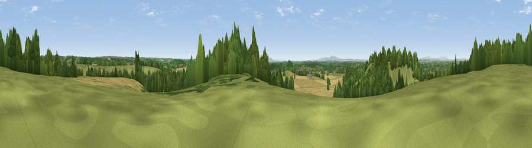

Viewpoint near Hanbury
#18321 in England · top 31% of its area beats it · near HanburyWhere it is
The exact computed spot (SO 95975 64475). Click the marker for map links.
The view, rendered

A 360° render of this exact spot computed from the terrain model, tree cover and land cover — summer colours, afternoon light, calibrated against photographs of famous viewpoints. Real trees, hedges and buildings will differ in detail.
The panorama
Grey silhouette: terrain skyline in each direction (720 bearings, Earth curvature and refraction included). Dashed green: skyline with trees (+15 m) and buildings (+8 m) as obstacles. Blue strip: how far the ground is visible on each bearing.
Where the view opens
Wedge length = distance to the farthest visible ground on that bearing (vegetation-aware). Rings at 10, 25 and 50 km.
What fills the view
47% grassland · 29% cropland · 22% woodland · 2% built-up
Angular shares of the visible panorama (visual magnitude), not map area. Landscape diversity 0.49 (0–1 Shannon).
Key numbers
More beautiful places nearby
The staircase of upgrades: each row has a higher view potential than everything closer. Driving times are estimates from straight-line distance, calibrated against real road routing — check an actual route before setting out.
| Place | Direction | Drive | Score |
|---|---|---|---|
| Viewpoint near Hanbury | SSE · 0 km | ~1 min | 55.2 |
| Viewpoint near Hanbury | SSW · 3 km | ~7 min | 62.1 |
| Viewpoint near Inkberrow | SE · 9 km | ~18 min | 62.8 |
| Rous Lench Hill | SSE · 12 km | ~23 min | 64.0 |
| Holywell Hill | N · 13 km | ~23 min | 69.4 |
| Windmill Hill | N · 13 km | ~25 min | 73.2 |
| Viewpoint near Clent | N · 16 km | ~28 min | 74.3 |
| Viewpoint near Abberley | W · 20 km | ~34 min | 77.5 |
52.27841, -2.06042 · source: screening · position refined by local search. Computed location — check access rights before visiting.